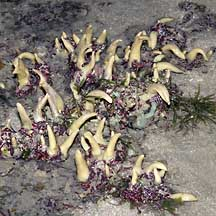
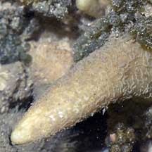

|
|
| sponges text index | photo index |
| Phylum Porifera |
| Yellow
horn sponge awaiting identification* updated Oct 2016 Where seen? There is a patch of these sponges at Chek Jawa, growing among coral rubble. The base of the sponges are usually covered with tiny red sea cucumbers and sometimes sponge synaptid sea cucumbers as well. Features: Sponge is horn-shaped and smooth. There does not seem to be a hole at the tip and no bits sticking out at the sides. Clumps of many horns may be spread over 30-40cm. Each conical, horn-shaped portion about 5cm tall and 3cm wide at the base. Colours beige to pale yellow. |
|
 Chek Jawa, May 05 |
 Chek Jawa, Jul 05 |
*Species are difficult to positively identify without close examination.
On this website, they are grouped by external features for convenience of display.
| Yellow horn sponges on Singapore shores |
On wildsingapore
flickr
|